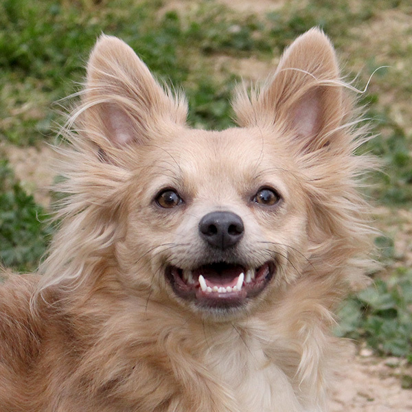
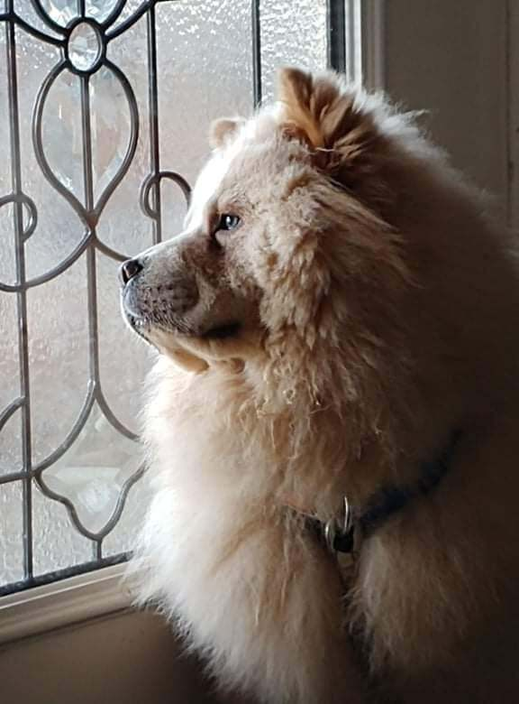
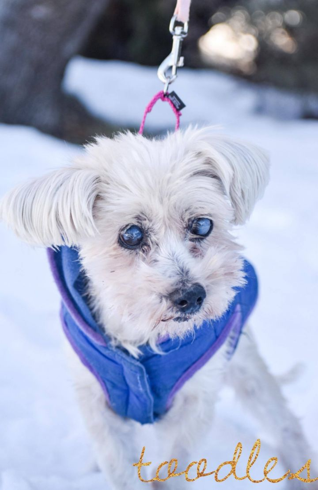
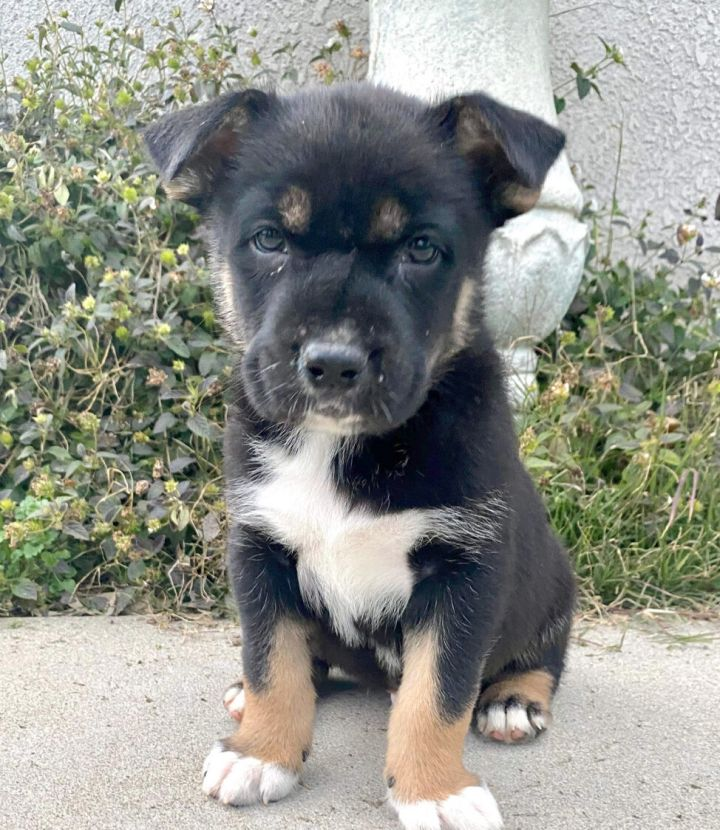

Puppies to Adopt
|  |
Papillon & Corgi Mix Adult - Male - Small Yellow / Tan / Blond / Fawn Friendly, Affectionate, Loyal, Gentle, Playful, Couch potato, Curious, Brave, Protective, Smart, Funny, Athletic, Dignified Fox is an adorable little dude with a big personality! Besides chewing on toys and Nylabones, one of his favorite things is chasing birds from the yard. He guarantees you’ll have a bird-free yard! After a few sprints (…or five or 10…)he’ll be ready to cuddle in your lap. He’s quite the escape artist though, so he should be kept away from open doors or any other small areas he might be able to squeeze through. Overall, Fox is a happy-go-lucky guy looking for a home with another little dog that won’t mind if he’s a bit bossy! |
|  |
Chow Chow Young - Male - Medium White / Cream Energetic, Friendly, Affectionate, Loves kisses This adorable cream pup with blueish-green eyes is such a sweetheart and loves to be loved on. He is high energy though, and loves to chew on things he shouldn't, so he needs someone who can keep a constant eye on him and spend lots of time with him, but he doesn't mind because he absolutely loves to be with people and snuggle with them. He is approximately 10 months old and gets along with other dogs and cats and would do well with older kids that he can play with. |
|  |
Schnauzer & Miniature Poodle Mix Senior - Female - Small White / Cream Friendly, Affectionate, Gentle Toodles was found as a stray covered in mats. Toodles is approximately 10 years old, she weighs in at 10 lbs. Toodles is blind and hard of hearing, but she doesn’t let that stop her. She can navigate through the house and the yard like a pro once she learns the layout. She is an excellent communicator! If you are not paying attention, she will bark at you to let her back in and will also let you know when she is hungry or low on water. She loves to be outside exploring and sniffing around. |
|  |
Husky & German Shepherd Dog Mix Puppy - Male - Small Brown, Black, & White Friendly, Affectionate, Playful, Funny, Smart, Curious, Gentle, Loyal, Loves kisses, Athletic, Brave, Independent Mezzo is an adventurous Husky and German Shepard mix. He is the brave one of the group and often the leader. He is the first one to come say hi and explore new areas. He loves wrestling with his siblings and playing tug of war with them, but can just as easily entertain himself with a toy. He is the first one to check out a new space and the others soon follow and he is happy to guide them all. He is adventurous and would make a good hiking/exploring partner. Just as much as Mezzo is adventurous and playful, he is just as much loving and enjoys cuddles. This cool little guy is ready for his new home and family and a lifetime of adventures and love. |
| שחר דמארי 2021 |